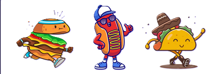
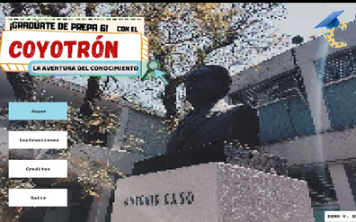

Coyotron es un proyecto que se realizo con tiempo, dedicacion y esfuerzo por 4 personas que aman lo que hacen, 3 estudiantes que dia a dia dieron un extra para poder conseguir el resultado que ahora tienen el honor de compartir con toda la comunidad de Prepa 6, esperan que este sea de su agrado y a su vez que los motive a no dejar de lado nuestro increible Estudio Tecnino en Computacion. Ellos son: Álvarez Molina Luana Sofía, León Contreras Angélica Valeria y Resendiz Linares Karen
Eres un estudiante de prepa 6, tu mayor obetivo es graduarte, pero antes deberas de aprobar las distintas materias comprendidas en los tres grados de bachillerato, ademas puedes aprender distintos temas en algunos lugares de la prepa como la biblioteca, mediateca y salones H de artes.
Una vez que ya sabemos un poco mas sobre la historia del juego tenemos que saber cuales son nuestros objetivos por que y para que estamos en esta increible mision.Entre ellos se nos dictamina un unico objetivo el cual es tan dificil como importante Graduarnos de prepa 6, tratando de superar todos los obstaculos que se nos puedan presentar durante el recorrido
El juego se construye de 3 niveles, cada uno de ellos comprende una parte unica y esencial del juego a traves de los cuales se tienen que atravesar distintos obstaculos y a su vez se pondran a prueba dos de los valores mas importantes como lo son la paciencia y adaptabilidad.Cada uno de lis niveles representa un año en la prepa (cuarto, quinto y sexto), en cada nivel se tendrá que responder distintas preguntas de tres materias representativas de ese año; además se deberán completar los niveles comodín que son de materias que no son exclusivas de un año pero que debes acreditar para pasar la prepa como Educación Física o el idioma (que es lo de mediateca), y una vez que se completa cada uno de estos desafios logras graduarte
